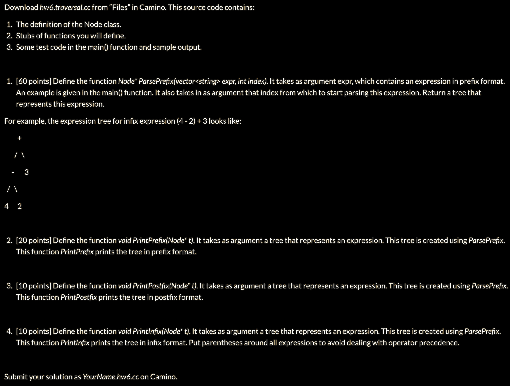

HW 6
Download file
#include <iostream>
#include <vector>
using namespace std;
class Node {
public:
string data;
Node* left;
Node* right;
Node(string d) : data(d), left(nullptr), right(nullptr) { };
};
bool isSymbol(string s) {
return s == "+" || s == "-"|| s == "*"|| s == "/";
}
Node* ParsePrefix(const vector<string>& expr, int& ind) {
if (ind > expr.size()) {
return nullptr;
}
Node* ret;
int next_one = 0;
if (isSymbol(expr[ind])) {
ret = new Node(expr[ind]);
ind = ind+1;
//left node
if (isSymbol(expr[ind])) {
ret -> left = ParsePrefix(expr, ind);
} else {
ret -> left = new Node(expr[ind]);
ind += 1;
}
//right node
if (isSymbol(expr[ind])) {
ret -> right= ParsePrefix(expr, ind);
} else {
ret -> right = new Node(expr[ind]);
ind+=1;
}
}
return ret;
}
void PrintPrefix(Node* t) {
cout << t->data << " ";
if (t->left != nullptr) {
PrintPrefix(t->left);
PrintPrefix(t->right);
}
}
void PrintPostfix(Node* t) {
if (t->left != nullptr) {
PrintPostfix(t->left);
PrintPostfix(t->right);
}
cout << t->data << " ";
}
void PrintInfix(Node* t) {
if (t->left != nullptr) {
cout << "( ";
PrintInfix(t->left);
}
cout << t->data << " ";
if (t->left != nullptr) {
PrintInfix(t->right);
cout << ") ";
}
}
int main() {
vector<string> expr = { "+", "-", "3", "2", "/", "*", "5", "7", "8" };
int index = 0;
Node* t = ParsePrefix(expr, index);
PrintPrefix(t);
cout << endl;
PrintPostfix(t);
cout << endl;
PrintInfix(t);
cout << endl;
return 0;
}
/*
+ - 3 2 / * 5 7 8
3 2 - 5 7 * 8 / +
( ( 3 - 2 ) + ( ( 5 * 7 ) / 8 ) )
*/